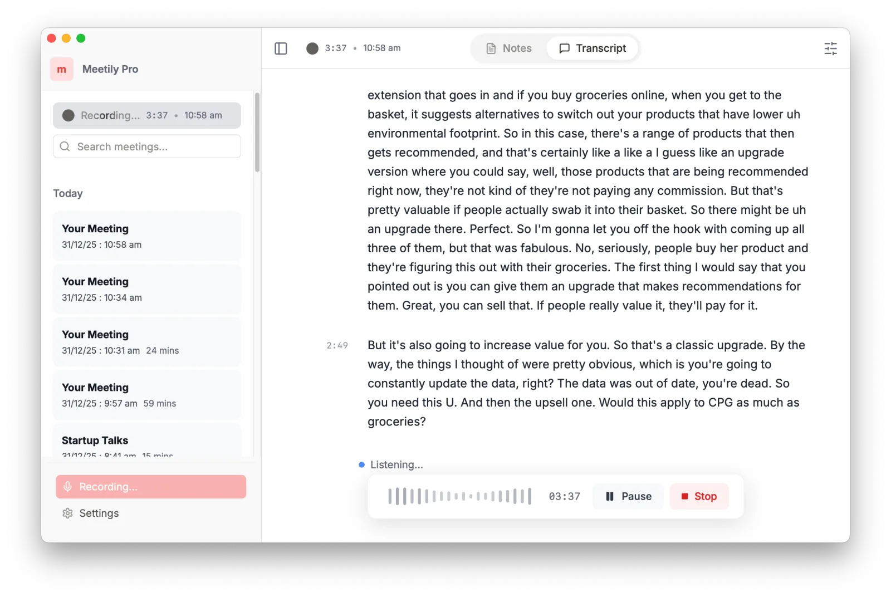
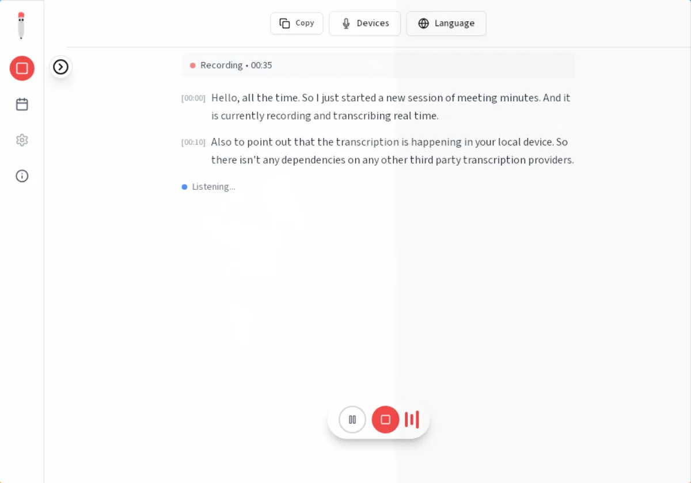
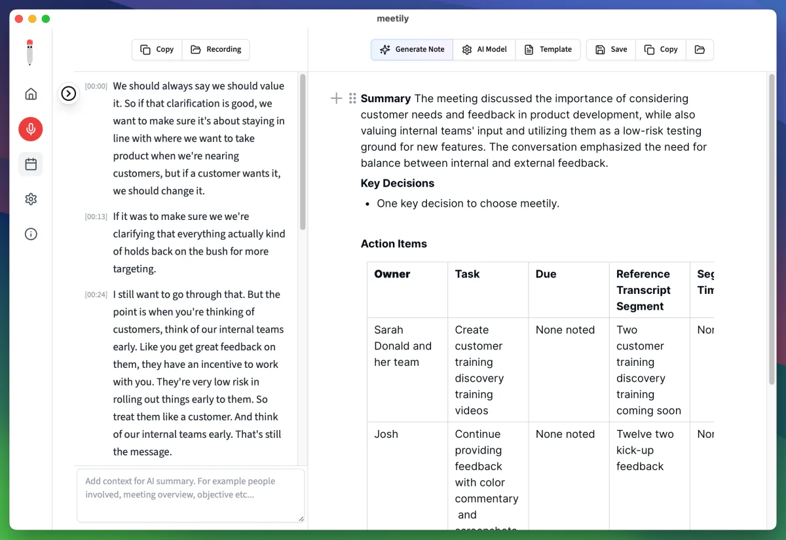

Turn conversations
into working memory.
Sivlo records, transcribes, and summarizes your meetings in real time, entirely on your device. No account, no upload, no cloud.
- REC
- 48 kHz · mic + system audio
- STT
- on-device whisper
- SUM
- actions & decisions
- MEM
- notes · full-text search
- NET
- 0 uploads · ever
Apple Silicon & Intel · notarized DMG · direct download
Proven on your machine, not in someone else's.
Audiophile-grade capture meets local speech recognition. Everything below runs on your Mac; none of it is a server.



One notebook, kept for you.
Every meeting becomes a dated entry: the recording, the transcript, the summary, and the notes, bound together, searchable, yours.
-
48 kHz
48,000 samples · per second
Capture that hears your meeting, not your room.
Mic and system audio are mixed professionally at 48 kHz, with ducking applied so a presenter is never drowned out by shared audio.
-
whisper
on-device · metal-accelerated
Real-time transcription on your own chip.
Speech is filtered for voice activity, then transcribed on-device, accelerated by Metal on your Mac. Speaking becomes text as it happens.
-
summary
title · summary · actions · decisions
The summary is the meeting, curated.
When you stop, Sivlo drafts a title, a summary, and the actions and decisions you actually need to carry forward.
-
search
full-text · local index
Working memory that you can search.
Notes persist beside every meeting, and full-text search finds a decision made months ago, instantly, offline, in your vault.
Your meetings are your property.
Sivlo never sees your meetings, because Sivlo never leaves your computer. Recordings, transcripts, summaries, and notes all live in Sivlo's local storage.
- No account to create, no folder to trust. The data resides on your machine.
- Analytics are explicit opt-in and off by default; meeting content is never an analytics payload.
- Transcription uses local models on local hardware. Offline is not a mode; it is the design.
0 bytes have ever left your device.
Take your meetings
home with you.
Sivlo for macOS is in public beta. Record, transcribe, and remember, with nothing leaving your Mac.
v0.4.0 public beta · Apple Silicon & Intel · notarized DMG · macOS 13+